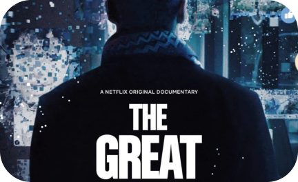
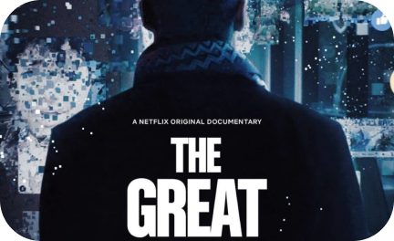

documentário Privacidade Hackeadacom; tem base nos
escândalos
protagonizados pelo
Facebook
em março do ano passado, em que a Cambridge Analytica coletou os dados
de 87 milhões de usuários sem que fosse permitido. O documentário veio à
tona pela primeira vez durante o Festival de Cinema de Sundance, que
aconteceu no início deste ano, e foi divulgado no início da campanha
presidencial dos EUA de 2020.c
O documentário abre uma avenida na cabeça de quem o assiste ao chamar sua
atenção para coisas como: “quem já viu uma propaganda que te convenceu que o
seu microfone está ouvindo suas conversas? Todas as suas interações, as
transações do cartão, pesquisas da web, localizações, curtidas, tudo isso é
coletado em tempo real numa indústria trilionária”, apontando que essa é a
razão por que Google e Facebook são as empresas mais poderosas do mundo, o
que se deve aos dados terem superado o valor do petróleo. Ou seja, os dados
são o bem mais valioso da terra.
Diretora: Karim Amer / Jehane Noujaim
Elenco: Brittany Kaiser, Carole Cadwalladr, David Carroll, Julian Wheatland
Elenco: Brittany Kaiser, Carole Cadwalladr, David Carroll, Julian Wheatland
Privacidade Hackeada: Filme da Netflix traz reflexão sobre privacidade
online.

+55 43 99999-9999